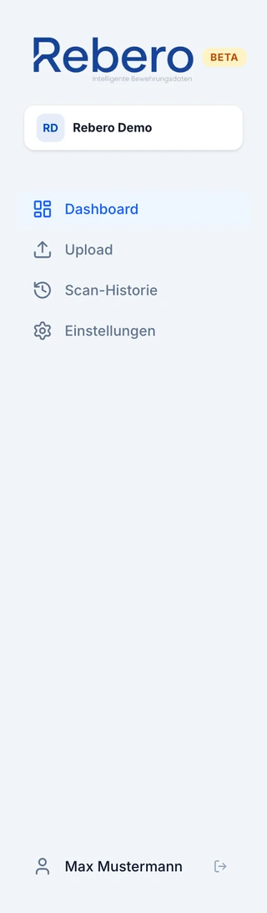
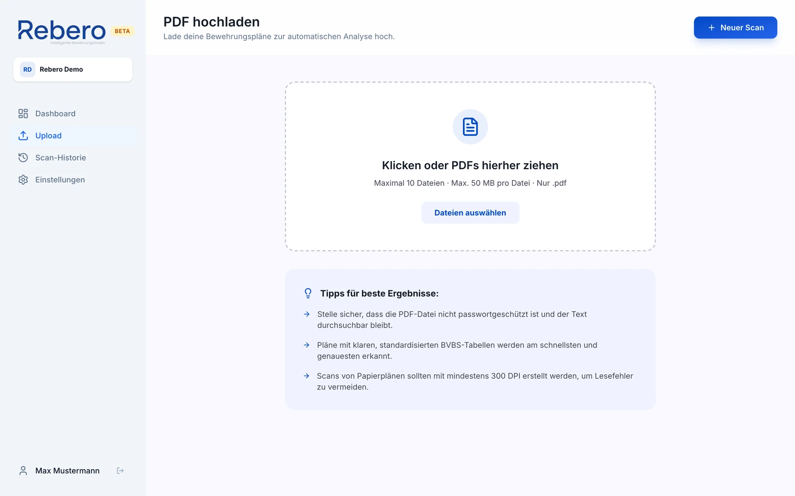
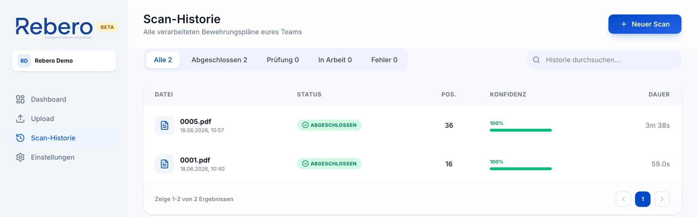
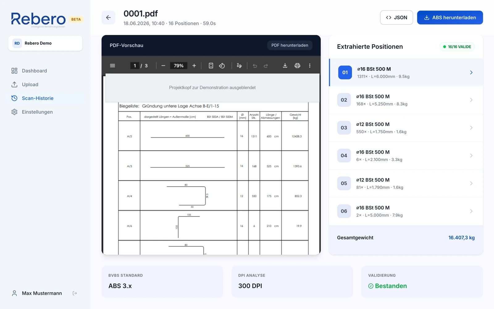
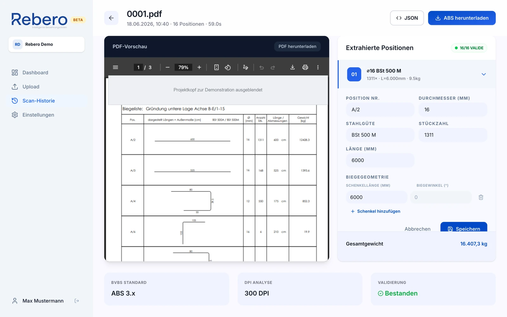
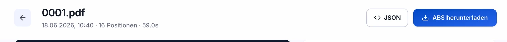

In 7 einfachen Schritten vom Bewehrungsplan (PDF) zur fertigen Datei für die Biegesoftware. Dauert normalerweise nur ein paar Minuten – kein Vorwissen nötig.

So ist Rebero aufgebaut
Am linken Rand ist immer das Menü. Ganz oben steht Dashboard – deine Startseite. Für die Arbeit brauchst du vor allem drei Einträge:
Upload – hier lädst du neue Pläne hoch.
Scan-Historie – hier liegen alle Pläne, die du schon hochgeladen hast.
Einstellungen – hier änderst du dein Passwort.
1
Anmelden
Öffne das Internet (z. B. das blaue Symbol auf dem Bildschirm) und tippe oben in die Adress-Zeile: app.rebero.io. Dann melde dich an.
123
1
Gib deine E-Mail-Adresse ein.
2
Gib dein Passwort ein.
3
Drücke auf den blauen Knopf Anmelden.
Tipp
Deine Zugangsdaten bekommst du per E-Mail von deinem Vorgesetzten. Beim ersten Mal kannst du dein Passwort unter Einstellungen ändern.
2
Pläne hochladen
Klicke links im Menü auf Upload. Am einfachsten: klicke auf das große gestrichelte Feld und suche deine PDFs auf dem Computer. (Wer mag, kann die PDFs auch mit gedrückter Maustaste hineinziehen.)

12
1
Hier ziehst du deine PDFs hinein – bis zu 10 Stück gleichzeitig.
2
Oder klicke auf Dateien auswählen und suche die PDFs auf deinem Computer.
Achtung
Es werden nur PDF-Dateien bis 50 MB angenommen. Ist eine Datei größer, wird sie nicht angenommen. Je besser der Scan lesbar ist, desto zuverlässiger erkennt Rebero die Werte.
3
Warten, bis der Plan eingelesen ist
Rebero liest den Plan jetzt von allein ein. Das dauert meist 1–2 Minuten – bei großen Plänen auch ein paar Minuten länger. Du findest den Plan unter Scan-Historie.

1
1
Steht hier grün Abgeschlossen (oder gelb Prüfung), ist der Plan fertig. Klicke ihn an, um ihn zu öffnen.
Die farbigen Schilder bedeuten:
Abgeschlossen – fertigIn Arbeit – bitte wartenPrüfung – bitte ansehenFehler – nicht geklappt
Welcher Status heißt was?Abgeschlossen (grün) oder Prüfung (gelb) – Plan anklicken und öffnen. In Arbeit (blau) – kurz warten. Fehler (rot) – noch einmal hochladen oder den Vorgesetzten fragen.
4
Plan öffnen und kontrollieren
Das ist der wichtigste Schritt: Vergleiche, was Rebero erkannt hat, mit dem Original-Plan.

12
1
Links siehst du deinen Original-Plan (das PDF).
2
Rechts steht, was Rebero daraus gelesen hat – eine Zeile pro Position.
Gehe die Positionen der Reihe nach durch und vergleiche: Stimmen Durchmesser, Länge und Stückzahl mit dem Plan überein?
Tipp
Oben rechts steht z. B. grün 16/16 valide. Das heißt: alle 16 Positionen sind geprüft und in Ordnung. Trotzdem schadet ein kurzer Blick nie.
5
Falsche Werte korrigieren
Stimmt ein Wert nicht? Kein Problem – du kannst ihn von Hand ändern.

123
1
Klicke die Zeile an, die du ändern willst. Darunter öffnet sich ein Bereich mit Eingabe-Kästchen. Tippe in das falsche Kästchen und ändere den Wert – z. B. Durchmesser, Länge oder Stückzahl.
2
Prüfe auch die Biegegeometrie darunter: die Schenkellängen und Winkel.
3
Drücke zum Schluss auf Speichern. Fertig.
Gut zu wissen
Das letzte Winkel-Feld ist hell/grau und lässt sich nicht anklicken. Es steht fest auf 0° – das ist richtig so, die letzte Strecke hat keine Biegung mehr.
6
Fertige Datei herunterladen
Alles kontrolliert? Dann hole dir die fertige Datei für die Biegesoftware.
Zuerst prüfen!
Schau oben, ob ein farbiger Hinweis steht. Ein roter Hinweis bedeutet: es fehlen Positionen in der Datei. Dann erst nachtragen (Schritt 5), bevor du herunterlädst. Mehr dazu in Schritt 7.

1
1
Klicke oben rechts auf den blauen Knopf ABS herunterladen.
Diese ABS-Datei ist das Endergebnis. Du lädst sie in die Biegesoftware – fertig.
Tipp
Neben dem Download steht noch ein Knopf JSON – den brauchst du nie. Nimm immer nur den blauen Knopf ABS herunterladen.
7
Warnungen verstehen
Manchmal zeigt Rebero oben farbige Hinweise. So sehen sie aus – und das bedeuten sie:
Roter Hinweis: „Prüfung erforderlich: X Fehler gefunden“
Bei diesen Positionen konnte Rebero etwas nicht sicher lesen. Sie fehlen in der ABS-Datei. Trage sie von Hand nach (Schritt 5) oder sprich mit deinem Vorgesetzten.
Gelber Hinweis: „Vor Maschinenübergabe prüfen“
Diese Positionen sind in der Datei enthalten, aber Rebero ist sich nicht ganz sicher. Schau sie vor dem Biegen noch einmal gegen den Plan an.
Kein Hinweis?
Dann ist alles in Ordnung und du kannst die ABS-Datei direkt verwenden.